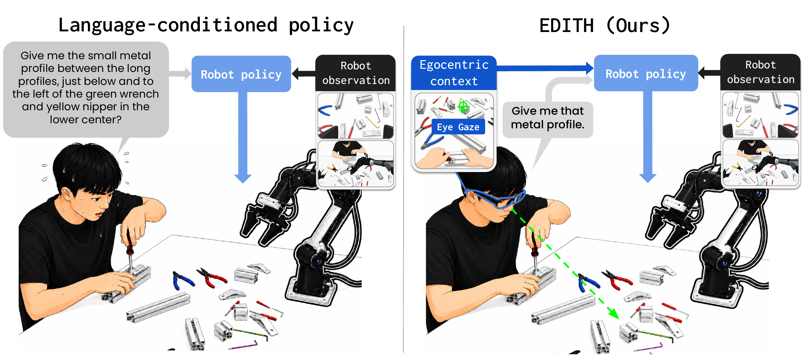
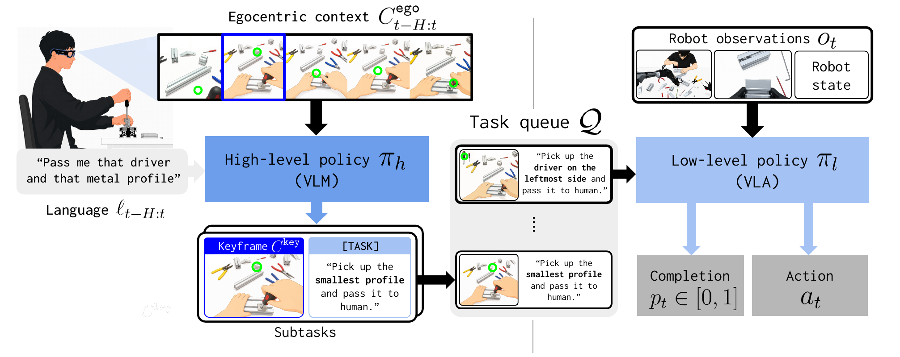
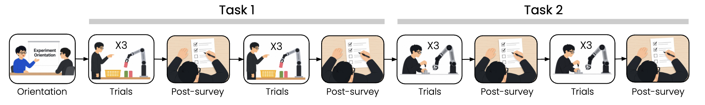
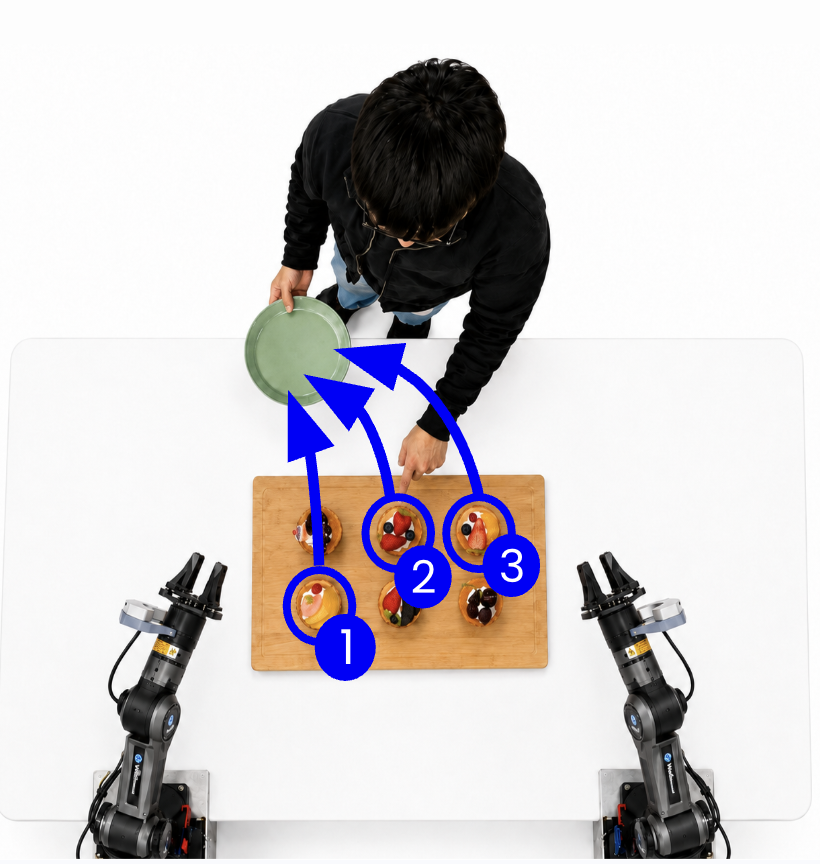
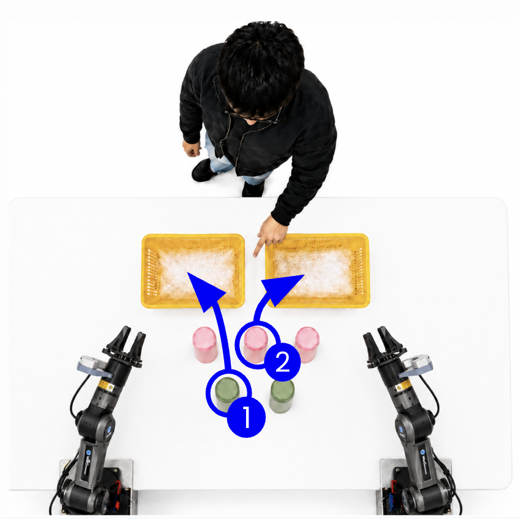
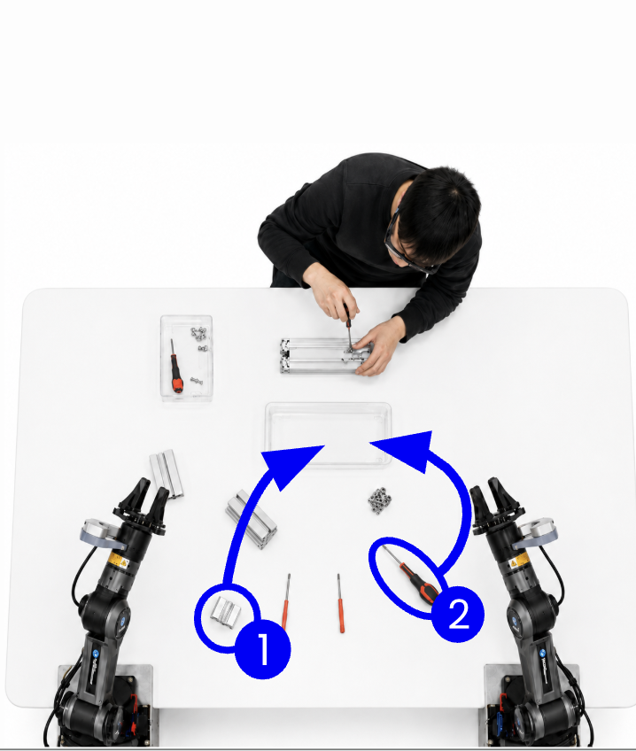

Motivation & Key Idea

Language-conditioned policies require fully verbalized text, which is often cumbersome and imprecise.
We leverage human egocentric view and gaze to capture nonverbal signals for natural human-robot interaction.
Hierarchical Policies from Verbal and Egocentric Human Signals for Natural Human-Robot Interaction
* Equal contribution
1 KAIST 2 Seoul National University 3 Config
Under review

Language-conditioned policies require fully verbalized text, which is often cumbersome and imprecise.
We leverage human egocentric view and gaze to capture nonverbal signals for natural human-robot interaction.
Hardware streams feed a hierarchical policy. EDITH first captures human signals through smart glasses, then runs a high-level policy and low-level policy asynchronously through a shared task queue.
We build a hardware system that streams the human's first-person view, gaze, and speech in real time, and synchronizes them with the robot's observations.
Why first-person view and gaze?
First-person view and gaze represent human nonverbal signals by capturing what the human is doing and where their attention is focused. Together, these streams provide cues for a robot policy to infer the human's underlying intent and needs.
Capturing human signals via smartglasses.
Using Project Aria glasses, EDITH streams first-person RGB, gaze, and speech to the robot server, transcribes speech into \(\ell_t\), and synchronizes the signals with robot observations \(o_t\) to produce \((C_t^{\mathrm{ego}}, \ell_t, o_t)\) at each timestep.
Human signals are rich but noisy, so EDITH uses a hierarchical architecture that separates intent inference from robot control. It consists of a and a . The planner turns human signals into instruction-keyframe subtasks, queues them in \(Q\), and the low-level policy converts each subtask into robot actions.

Overall Design
EDITH converts verbal instructions and egocentric context into instruction-keyframe subtasks, stores them in \(Q\), and executes each subtask with the robot policy.
EDITH improves task success while reducing the user's instruction burden.
Results are reported with success rate (SR) and task progress (TP) over 48 trials per task per method, plus a user study on instruction workload.
EDITH achieves 59.7% average success rate and 84.7% task progress by translating nonverbal human signals into keyframe-grounded subtasks.
Language-only baselines, \(\pi_l^{\mathrm{lang}}\) and \(\pi_h^{\mathrm{lang}} + \pi_l^{\mathrm{lang}}\), do not use egocentric context and perform poorly , highlighting the importance of egocentric context for grounding nonverbal intent.
Directly conditioning an end-to-end policy on the current egocentric context yields inconsistent benefits: it helps only when gaze remains on the target, but degrades when attention is intermittent. EDITH handles both cases more consistently by monitoring intent separately through the high-level policy.
EDITH reduces the effort users must spend to convey their intent. Compared with the \(\pi_h^{\mathrm{lang}} + \pi_l^{\mathrm{lang}}\) baseline, EDITH substantially lowers instruction workload on both Muffin-Serving and Tool-Passing, and the reduction is statistically significant (\(p < 0.001\)).
The baseline places much of the burden on the user: participants must verbally describe each target object precisely enough to disambiguate it, including attributes such as color, position, and surrounding objects. EDITH instead lets users pair brief utterances with nonverbal expressions such as gaze and pointing, removing the need to fully verbalize the target.
Following the paper structure, we analyze EDITH through question-answer studies on design choices, robustness, and additional baselines.
A: To isolate the keyframe's contribution, we compare EDITH with a hierarchical no-keyframe baseline: \(\pi_h\) still maps egocentric context and language into subtasks, but \(\pi_l\) receives only the subtask instruction. Removing the keyframe drops SR/TP by 49.9/51.5 points on average. This happens because \(\pi_h\) can hallucinate the wrong target when verbalizing nonverbal signals, and semantically correct subtasks can be phrased in ways unseen during \(\pi_l\)'s training. Since EDITH retrieves the keyframe from the egocentric stream instead of generating it as text, it avoids both hallucination and ambiguous phrasing.
A: In natural interaction, human attention can shift to unrelated activities such as briefly checking a phone. We test this in Muffin-Serving by having the human alternate between checking a text message and requesting muffins until all three are requested. EDITH's SR and TP remain comparable to the non-distracted setting, with only a 0.5% relative drop in task progress. In contrast, \(\pi_l^{\mathrm{ego+lang}}\), which directly feeds egocentric context to an end-to-end policy, shows a 17.8% relative drop under distraction. This underscores the value of the hierarchical design, where \(\pi_h\) captures the moments when the human expresses intent.
We also evaluate \(\pi_l^{\mathrm{lang}}\) with fully specified instructions that explicitly name each target object, and compare it with EDITH using underspecified language accompanied by nonverbal signals.
Even without fully specified language, EDITH achieves higher success rate, showing that it effectively leverages nonverbal signals to capture human intent. In contrast, \(\pi_l^{\mathrm{lang}}\) often fails even with detailed verbal instructions because the evaluation scenes contain densely cluttered and visually similar targets.
In Tool-Passing, for example, multiple screwdrivers look similar; in Muffin-Serving, muffins differ only by small toppings. Requiring users to fully verbalize these details also imposes substantial workload. EDITH matches or surpasses fully specified language without requiring that burden.
We recruited 16 participants (6 female, 10 male; ages 20-40). All participants were native Korean speakers with no or limited prior experience interacting with collaborative robots. Each participant was compensated 10,000 KRW for approximately 30 minutes of participation.

Each participant experienced both methods across the two tasks in a within-subjects design.
Orientation. Participants first attended a brief orientation session that introduced the study purpose and procedure, then watched videos of the robot performing the tasks to become familiar with the setup. To reduce potential bias, the two methods were referred to only as color labels: System Blue for the baseline \(\pi_h^{\mathrm{lang}} + \pi_l^{\mathrm{lang}}\), and System Purple for EDITH.
Condition-specific instructions. In the baseline condition, participants used verbal instructions alone, including attributes such as color, location, and name, without gestures or gaze. In the EDITH condition, they used brief verbal references together with nonverbal signals such as pointing gestures and gaze.
Tasks and goal presentation. At the beginning of each trial, participants were shown a goal image. Muffin-Serving goals showed a specified muffin served on a plate, while Passing Tools goals showed an assembly instruction diagram. Goals were shown as images, not text, so participants would express intent in their own words rather than copy written instructions.
Trials and survey. For each task-condition combination, participants performed three trials with different goals. Task and condition order were counterbalanced. After each condition, participants completed the survey, resulting in 12 trials and 4 survey responses per participant.
Instruction workload. We adapted four items corresponding to NASA-TLX dimensions relevant to our context and converted them to a 7-point Likert scale (1 = strongly disagree, 7 = strongly agree). The survey was administered in Korean; we report English translations of the items below.
Because Likert responses may not satisfy the normality assumption, we used the Wilcoxon signed-rank test for paired comparisons between the two conditions. Effect sizes are reported as \(r = Z / \sqrt{N}\).
EDITH produced lower workload scores than the baseline on all four survey items and both tasks, with every comparison statistically significant (p < 0.01). Effect sizes ranged from \(r = 0.74\) to \(0.89\), indicating large effects.
The largest effects appeared for mental demand and successful intent conveyance, suggesting that precisely verbalizing target attributes is a major source of workload in the language-only baseline. Under EDITH, workload stayed consistently low across tasks, indicating that nonverbal cues reduced the burden of conveying intent.
*** p < 0.001, ** p < 0.01.
Three tasks require grounding underspecified language in nonverbal signals.
In each task, the language instruction is intentionally incomplete: the robot must interpret gaze or pointing gestures to identify the target objects and complete the requested subtasks.

Task 01
Six muffins are densely arranged. The human requests three with a single instruction while pointing at each target.

Task 02
Five tumblers and two baskets are placed on the table. The human points to tumblers and baskets to specify a multi-step sorting request.

Task 03
While assembling a metal stand, the human briefly asks for a driver and a metal profile; gaze identifies the intended tools.
Task 01 / 03
Paper PDF.
BibTeX entry placeholder. Replace this entry with the official citation after the paper is accepted or uploaded.
@inproceedings{edith2026,
title = {EDITH},
author = {Project EDITH Team},
booktitle = {To appear},
year = {2026}
}